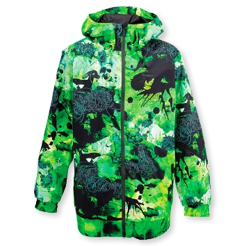
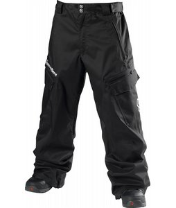
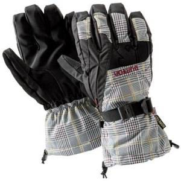
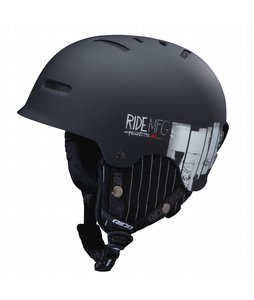
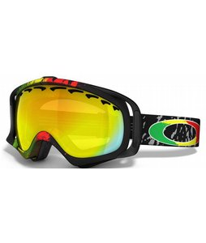
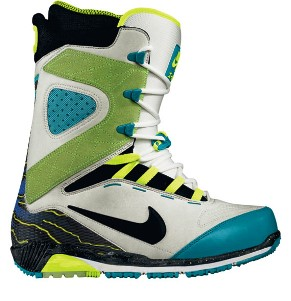
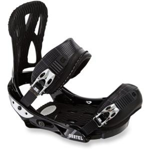
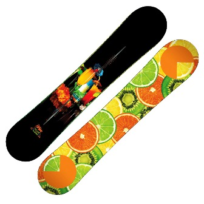

Required Gear
Gearing up adequately while snowboaring is definitly a crucial aspect of being able to perform at the best of your ability. This includes having the right winter attire that will get the job done of keeping you warm and cozzy all day. Having the right gear also entails having the right board for your ability. If you are just beginning and are most likely going to be renting, you can talk to the rental shop about what the best board and boot set up is for you..
Here is a list with some descriptions of what you will need and why it is required gear:
|
- Underlayers
 Underlayers are "underlyingly", the most crucial aspect of going outside in the winter for extended amounts of times. It is the base layer that comes into contact directly with the skin. It is a good idea to wear some kind of "thermal" which is made out of polypropylene, or merino wools fabrics, that stick close to the skin (Spandex) and are permeable so that it will not become saturated with sweat. If you wear normal cloths sometimes the sweat can stay on the fabric and make you feel very cold. Wearing layers that are suitable over this main layer. The key is wear excess amounts of underlayers and if you get to warm then take layer by layer off, until you feel comfortable. Underlayers are "underlyingly", the most crucial aspect of going outside in the winter for extended amounts of times. It is the base layer that comes into contact directly with the skin. It is a good idea to wear some kind of "thermal" which is made out of polypropylene, or merino wools fabrics, that stick close to the skin (Spandex) and are permeable so that it will not become saturated with sweat. If you wear normal cloths sometimes the sweat can stay on the fabric and make you feel very cold. Wearing layers that are suitable over this main layer. The key is wear excess amounts of underlayers and if you get to warm then take layer by layer off, until you feel comfortable.
|
- Jacket
-  A jacket is a crucial part of gearing for any winter activity. Being the outer layer The jackets main function is to keep the core warm and if the core stays warm that means that the rest of the body is going to have a better chance of remaining warm. A nice feature that a snowboarding jacket in particular could have is a high neck area so that when it is fully zipped up your neck isnt exposed. The neck seems to be one of those areas that really chills the bones if it becomes exposed. On the days where it is extra chilly, and windy a jacket with a hood could make a huge difference too.
|
- Pants
-  Snowbaord or ski pants are absolutely necessary. They are your outer layer for your legs to resist the elements of wind, snow melt etc. You want to make sure that they are thick enough and don't restrict you movement too much. This should especially be true in the area of the knees because you will be bending your knees quite a bit to attain better balance into turns and stops that I will later describe in more detail. If you are a beginner you should assume that you will be on your butt and knees more often as you try to establish your balance and comfortablity on the board. Even if you aren't beginning you will still most likely strap in to your board while on your butt so, you want to make sure you get some thick durable pants that aren't restricting.
|
- Gloves
-  Having a comfortable glove is important. Making sure the glove is water proof as well as partially permeable is even more important. Alot of snowboard grade gloves or gloves that are made for outdoor activities are made with a material called Gore-Tex. It is a waterproofing breathable fabric that can be essentially to not sweating, and if you are a knuckle dragger, to get you dry and comfortable. If you are a beginner and don"t have these as option I would suggest bringing multiple pairs of gloves along with you for the adventure.
|
- Helmet
-  For some snowboarders in the culture, wearing a helmet is a stlye "no-no" for what ever ingnorant reasons. The better way to look at it is with a helmet you could save your life if you hit your head, without one you could be serioulsy injured of even die. It's important to be as safe as you possibly can be while snowboaridng. The speeds that are achieved are more than what you would think, sometimes in excess of 40mph. This isn't the speed that a beginner would be likely to achieve because they would start on the smaller slopes and work their way up to the main mountain and the lifts that go to the top. Even still, when you are starting off even on the bunny slopes it would be a good idea to wear a helmet because you should be ready to fall, at least a few times before you get the hang of balancing. It is really not the most fashionable thing but is cruical to safety. If you don't have your own and you are just starting out you can rent one at the rentals shop for a small fee that is more than worth it to payup.
|
- Goggles
-  Goggles can come in very handy. They protect the eyes from the strain of the cold wind while heading down the slopers. Most goggles are polarized so, they can keep the sun out of your eyes as well and give you added vision to see down the slope in determining where you are going. On a snowy day, the snow flakes coming down can be a nuisance to the eyes and goggles can be a huge relief. Wearing goggles can't hurt and can really only improve your time while on the slopes, regardless of level of snowbaording ability. If you don't own your own pair, then you can find a pair at the rental shop that I am sure they would rent to you for a small fee.
|
- Boots
-  Boots are the piece of equiptment that come in contact with the board by attaching to the bindings. The boot is structually strong and can support the leg up until about mid lower leg. This helps alot with stability when you are strapped in to the board. A snowboarding boot normally has either laces, which have began to be phased out by the self tie system. This system allowws the user to simply slip their foot into the boot and pull on a centeral lace that you can tighten by pulling up to the knee, and then at the top of the lace is a lock that you can pull down all the way to the boots tongue to lock it into place. A simple and far less tedious way of tieing the boot leads to more ease of adjustment and therefore more comfortablility.
When selecting boots, whether renting or purchasing:
- Make sure you pick the right size.
- Foot shouldn't be able to move in boot.
- The tighter the boot the more control.
- Make sure it's not to tight.
- Pick a style that is suiting; the pulling lock lace design is best.
|
- Bindings
-  Two bindings attach to the board with bolts. The boots then strap into the bindings. You can align with your right foot being in the front of the board or your left foot. A test to determine this "stance" is stand on a hill normally facing down the hill, letting your buddy give you a slight push in each position to send you off balance. The leg you use to stop your self form falling should be your front leg on the board. If you ever want to switch the stance during the day it can be simply done by loosening a few bolts and twisting the binding around.
Determining Stance with bindings
- Firgure out a comfortable stance.
- Regular stance = left leg infront.
- Goofy stance = right leg infront.
- This is only dominant stance.
- If board is symetrical, then you can switch stances at will.
|
- Board
-  The board is the piece of equiptment that makes contact with the snow. It has a waxed bottom for speed, and metal razor sharp rails surrounding the edges of the board. These give traction and dig into the snow and for the ability to stop and hold an edge whilie turning.
Determining board
- Beginning board should be stiff.
- Softer more playful board isn't as good for just riding.
- Size is determined by board parallel to body.
- If board is in the range of chin to nose, it will be a fit.
- Less board length is more for park and isnt as good for just riding.
|